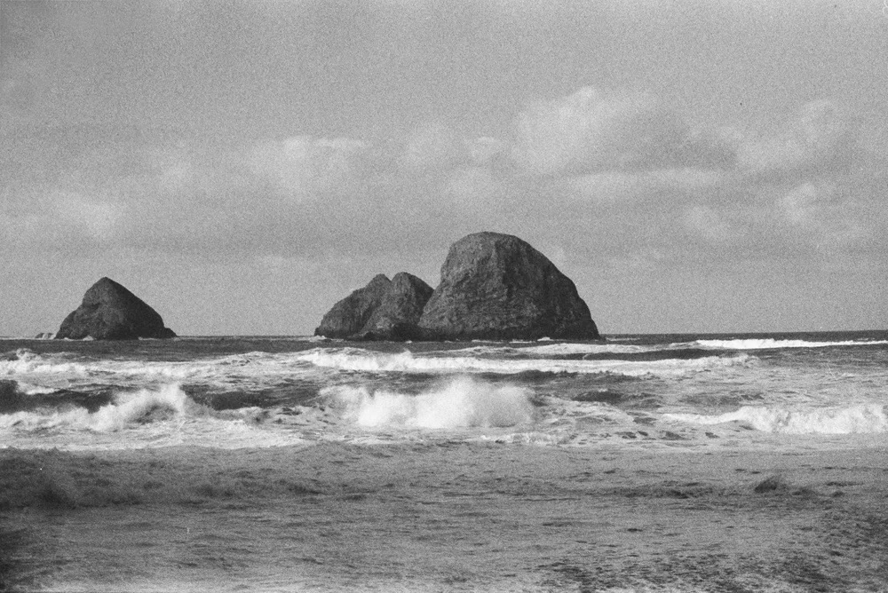
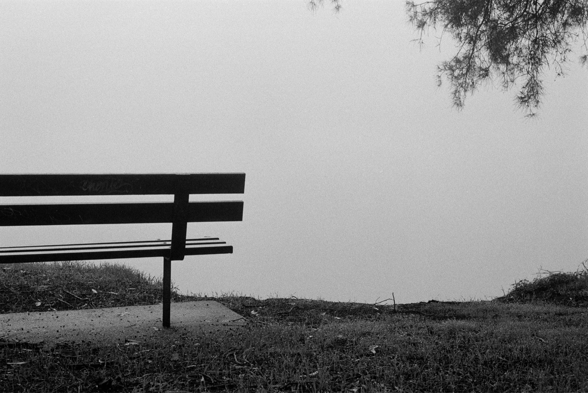
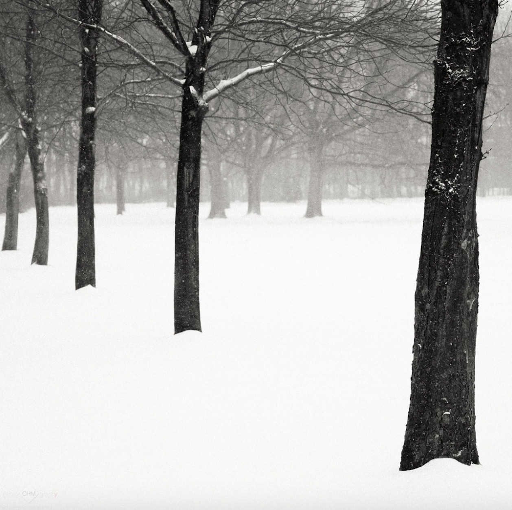

2026 胶片行情观察：哪些黑白卷悄悄涨了价，哪些反而便宜了
先说结论：今年真正让胶片党肉疼的是彩色负片，不是黑白。但「黑白没涨」也不完全对——有几款确实在悄悄加价，同时也有卷在反向降价。
所以这篇不聊情怀，只算账：谁涨了、谁便宜了、你的钱该往哪花。所有数字都来自公开报告，来源列在文末。

一、先说坏消息：这几款确实涨了
Ilford 系（部分型号）。PetaPixel 在 2026 年 7 月的报告（引用 Analog Cafe 的统计）里点名了几款涨得靠前的：Ilford XP2 Super 400 涨了 10.4%，FP4 Plus 125 涨了 9.2%——都明显高于年初。
柯达 T-Max 系列（120 规格）。按公开的柯达调价清单，T-Max 100 的 120 五连包涨了 20%，T-Max 400 的 120 五连包涨了 17.2%。想要温和涨的对照组：同批清单里 Tri-X 400 的 120 五连包只涨了 1.2%。
关税也掺了一脚。Harman（生产 Ilford 的公司）在 2025 年 4 月就因美国关税，把 Ilford / Harman 的胶片与相纸在美国区上调约 11%。到 2026 年 2 月，论坛上已有玩家实测：HP5+ 与 FP4 的 120 规格涨到约 $11 一卷。
一句话：黑白没被团灭，但 Ilford 与 T-Max 这些主力，确实在往上走。
二、好消息：它反而是降下来的那条线
反转来了——柯达 Tri-X 400。Kodak Alaris 早在 2024 年初就把它降价最多 30%（PetaPixel 当时报道，一卷 36 张从约 $10 降到约 $7 的量级）。到了 2026 年 7 月的公开报价（Pellica 的价格表），HP5 与 Tri-X 都落在 $9–12 区间——而 Tri-X 被点名是少数变便宜的胶卷。
对黑白党来说这是好消息：你最想买的那卷经典，正好是没跟着涨的那个。

三、想省钱？这三条线最划算
① 东欧 / 捷克系。Pellica 的 2026 价格表里，Fomapan 400 落在约 $6–9，属于能买到的最便宜那一档。
② 大厂平价线。Kentmere 400（Ilford 旗下的平价系列）同样约 $6–9——想要大厂血统加低单价，这是最短路径。
③ 平替思路。比如 Adox CHM 400，被玩家称作「平民版 HP5+」，针对 HP5+ 的冲洗时间基本能直接套用，价格却更低。

说句大实话
今年这波涨价，主角是彩色负片——国内有玩家统计，柯达 6 月起提价约 15%，ColorPlus 200 从 ¥64.88 涨到 ¥74.61，加上冲扫，一卷 36 张轻松破百。相比之下，黑白是整个胶片市场里最稳、也最便宜的一档（PetaPixel 那份报告的标题干脆就是价格趋稳）。
所以别被「胶片完了」的情绪带走。真正的变化不是黑白涨了，而是卷与卷之间的差距被拉开了——会挑的人，反而比去年更省钱。
涨的是行情，省的是选择。
评论区聊聊
你最近买的黑白卷多少钱一卷？有没有发现哪款明显变贵了？留言报个价，让大家都少花冤枉钱。
数据来源
PetaPixel（2026-07-09《Report Shows That Despite Some Shifts, Film Prices Remain Stable》，引 Analog Cafe 统计）、PetaPixel（2024-01-31 Tri-X 降价报道）、Pellica（Film Prices 2026 价格表）、Photrio 论坛（2026-02 Ilford 价格实测）、柯达公开调价清单。价格随市场波动，本文数字为发布时的公开报价，仅供参考。
查这些卷的参考价格
Tri-X 400 HP5 Plus Fomapan 100 Classic Adox CHM 400 Rollei RPX 400